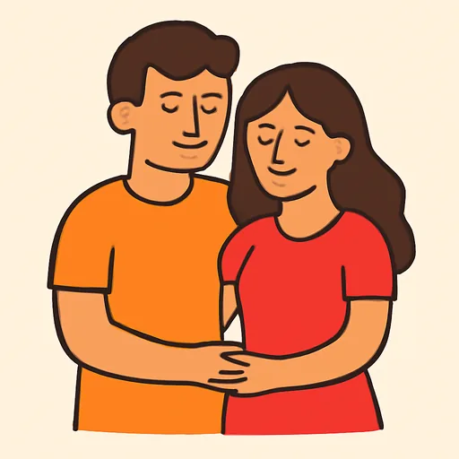
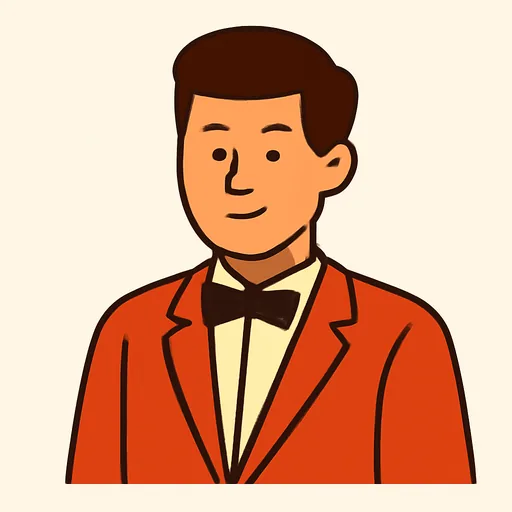
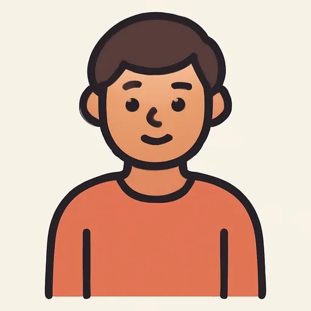

Черновик: урок написан, но преподаватель его ещё не вычитал.
Semana 5 · Día 3 — Nuestro, vuestro y el estado civil
Неделя 5 · День 3 — Nuestro, vuestro и семейное положение
Сегодня вы научитесь
- говорить «наш» и «ваш» в четырёх формах: nuestro / nuestra / nuestros / nuestras;
- спрашивать и отвечать про семейное положение: casado, soltero, divorciado, viudo;
- заполнять семейную карточку на шесть человек — это выход дня.
1. Разминка (0–3 мин)
- Карточки: 10 слов — родня и притяжательные.
- Вопрос по вчерашнему: ¿Cómo se llama tu madre? ¿Y sus padres, dónde están? Ответьте вслух и проверьте -s на конце.
2. Фонетика (3–6 мин)
Третья порция твёрдости. Сегодняшние слова нарочно набиты сочетаниями, на которых русский язык смягчает согласную: te, de, ti, di, ni, li. Произносите так, как будто после согласной стоит «э» или «ы»:
soltero · nuestro · vuestra · divorciado · pareja · viudo · familia · nietos
Самое трудное — soltero: русское ухо хочет [соль-ТЕ-ро] с мягкими «ль» и «те», а испанское слово звучит [сол-ТЭ-ро], где l твёрдая, как в «лом», и t твёрдая, как в «ты». Запишите восемь слов и сравните с собой вчерашним: tiene, tío, padre.
3. Новое (6–16 мин)
Пример
Кармен и Дмитри заполняют анкету для школьного праздника: школа хочет знать,
кто придёт с семьёй. Марта, преподавательница, задаёт вопросы. [AUDIO]
| Español | Русский |
|---|---|
| Marta: Chicos, una pregunta: ¿vuestras familias están aquí, en España? | Ребята, вопрос: ваши семьи здесь, в Испании? |
| Carmen: Nuestra familia, sí: mi hermano y yo somos de Valencia. | Наша семья да: мы с братом из Валенсии. |
| Dmitri: Mis padres, no. Pero nuestros primos están en Madrid. | Мои родители нет. Но наши двоюродные в Мадриде. |
| Marta: Carmen, tu hermano Javier, ¿está casado? | Кармен, твой брат Хавьер женат? |
| Carmen: Sí, está casado con Marta. Y nuestros sobrinos tienen cuatro y seis años. | Да, он женат на Марте. А нашим племянникам четыре и шесть. |
| Marta: ¿Y tu hermana Lucía? | А твоя сестра Лусия? |
| Carmen: Está soltera, pero tiene pareja: su novio es de Sevilla. | Она не замужем, но у неё есть пара: её парень из Севильи. |
| Dmitri: Mi tío está divorciado y mi abuela es viuda. | Мой дядя в разводе, а бабушка — вдова. |
| Marta: Entonces, ¿cuántos sois en vuestras dos familias? | Тогда сколько вас в ваших двух семьях? |
| Carmen: Nuestras dos familias… ¡catorce personas! | Наши две семьи… четырнадцать человек! |
Найдите в диалоге четыре разные формы nuestro и vuestro. Чем они отличаются друг от друга?
Объяснение
Вчера было легко: mi, tu, su по роду не менялись. Mi padre и mi madre — одно и то же слово. А сегодня — два притяжательных, которые ведут себя как обычные прилагательные и меняются и по роду, и по числу. Хорошая новость: это ровно то, что делает русский («наш дом», «наша семья», «наши дети»), так что учить нечего — надо только не забыть.
| Мужской | Женский | |
|---|---|---|
| один предмет | nuestro hermano | nuestra hermana |
| несколько | nuestros hermanos | nuestras hermanas |
| один предмет | vuestro hijo | vuestra hija |
| несколько | vuestros hijos | vuestras hijas |
Все притяжательные недели на одной странице:
| Владелец | Один предмет | Несколько |
|---|---|---|
| yo | mi | mis |
| tú | tu | tus |
| él / ella / usted | su | sus |
| nosotros / as | nuestro / nuestra | nuestros / nuestras |
| vosotros / as | vuestro / vuestra | vuestros / vuestras |
| ellos / ellas / ustedes | su | sus |
🌎 Про vuestro сразу важное. Оно существует только там, где есть vosotros, то есть в Испании. В Латинской Америке «вы» — это ustedes, а «ваш» — su / sus: ¿Dónde está su casa? Учить vuestro всё равно нужно (DELE, испанские учебники, кино), но в Мексике или Аргентине вы его не услышите.
Семейное положение. Запомните как готовую формулу — с глаголом estar:
| Español | Русский | Женский род |
|---|---|---|
| estar casado (con) | быть женатым (на), замужем (за) | casada |
| estar soltero | быть неженатым, незамужней | soltera |
| estar divorciado | быть в разводе | divorciada |
| estar separado | жить раздельно, не разведясь | separada |
| ser viudo | быть вдовцом | viuda |
Вопрос: ¿Estás casado? / ¿Estás casada? — «Ты женат? / Ты замужем?» И вежливо: ¿Está usted casado?
Почему здесь estar, а не ser, которым мы пользовались для профессий? Потому что это состояние, а не природа человека. Целый день этому посвящён на следующей неделе; сегодня просто запомните формулу целиком, как запомнили tengo … años. 🌎 В Латинской Америке нередко говорят и ser casado, ser soltera — это не ошибка.
И два слова про пару: la pareja — «пара» и заодно сам партнёр, без указания на пол и на брак: Tiene pareja — «у него(неё) есть пара». El novio / la novia — «парень / девушка», а на свадьбе те же слова значат «жених / невеста».
Возраст у третьего лица: ¿Cuántos años tiene tu madre? — Tiene cincuenta y dos años. Вопрос вам знаком, новое здесь — только то, что речь не о вас.
⚠️ Контраст с русским
- В русском «наш» согласуется с существительным: наш дом, наша семья, наши дети, наших детей. Вы делаете это не задумываясь.
- В испанском — то же самое, и это подарок: nuestro hermano, nuestra hermana, nuestros hermanos, nuestras hermanas. Четыре формы, одна логика, уже вам знакомая. Ловушка в другом: mi, tu, su так НЕ делают, и после четырёх правильных nuestra рука сама просит написать mia madre.
- Вы захотите сказать: ✗ nuestro madre, ✗ nuestros hermanas, ✗ mia hermana, ✗ tua casa → Правильно: ✅ nuestra madre, ✅ nuestras hermanas, ✅ mi hermana, ✅ tu casa. Правило в одну строку: nuestro и vuestro меняются по роду, mi / tu / su — нет.
Что ещё помогает: «наш» и «ваш» в русском тоже длиннее, чем «мой» и «твой». Та же асимметрия, что в испанском. А что мешает: ✗ Nuestro familia es grande — потому что по-русски «семья» женского рода, а «наш» перед ней мужского не бывает… но вы всё равно это напишете, потому что familia кончается не на «-а» в вашей голове, а на «-ия». Правило смотрит на испанское слово: la familia → nuestra familia.
4. Практика (16–26 мин)
Упражнение А. Дополните формой nuestro / nuestra / nuestros / nuestras.
Модель: ___ casa → nuestra casa
- ___ padre · 2. ___ madre · 3. ___ hijos · 4. ___ hijas ·
- ___ familia · 6. ___ abuelos · 7. ___ tía · 8. ___ sobrinos ·
- ___ primas · 10. ___ hermano mayor
Потом поставьте те же десять словосочетаний с vuestro и прочитайте вслух.
Упражнение Б. Дополните диалог. Банк слов:
casado · divorciado · divorciada · novia · nuestros · pareja · soltero · viuda · vuestra · vuestros
Два слова из банка лишние: они не подходят ни в один пропуск. Найдите их и объясните по-русски, почему.
— ¿Y ___ (1) familia, Dmitri? ¿Tus padres están juntos? — Sí, están juntos. Mi tío, no: está ___ (2). Y mi abuela es ___ (3). — ¿Y tú? ¿Estás ___ (4)? — No, estoy ___ (5), pero tengo ___ (6): mi ___ (7) se llama Olga. — Entonces en la fiesta sois tres: tú, Olga y ___ (8) primos de Madrid.
Упражнение В. Переведите на испанский.
- Наша семья небольшая, а ваша?
- Наши двоюродные сёстры в Мадриде.
- — Твоя сестра замужем? — Нет, она не замужем, но у неё есть парень.
- Мой дядя в разводе, а бабушка — вдова.
- Сколько лет вашей матери? — Пятьдесят два.
- Это наши племянники и их родители.
5. Выход (26–29 мин)
Заполните семейную карточку на шесть человек. Шесть настоящих родственников (или знакомых, если так проще), по одной строке на каждого. Числа — словами, как на третьей неделе.
| Ficha familiar | ||||
|---|---|---|---|---|
| Nombre | Relación | Edad | Estado civil | Profesión |
| Pilar | mi madre | cincuenta y dos | casada | profesora |
Потом расскажите карточку вслух шестью фразами, по этому образцу:
Mi madre se llama Pilar. Tiene cincuenta y dos años, está casada y es profesora.
И одна фраза в конце — про всех сразу, с nuestra или nuestros: Nuestra familia es grande: somos ocho.
6. Итог (29–30 мин)
- [ ] Я ставлю nuestro / nuestra / nuestros / nuestras по роду и числу.
- [ ] Я помню, что mi / tu / su по роду НЕ меняются.
- [ ] Я спрашиваю ¿Estás casado? и отвечаю soltero / casada / divorciado.
- Добавьте слова дня в колоду: формы nuestro — одной карточкой, все четыре.
Словарь дня
| Español | Русский | Пример |
|---|---|---|
| nuestro / nuestra | наш / наша | nuestra familia, nuestro padre |
| vuestro / vuestra | ваш / ваша (в Испании) | ¿Y vuestra casa? |
| casado / casada (con) | женат / замужем (на, за) | Está casada con Javier. |
| soltero / soltera | неженатый / незамужняя | Mi hermana está soltera. |
| divorciado / divorciada | в разводе | Mi tío está divorciado. |
| viudo / viuda | вдовец / вдова | Mi abuela es viuda. |
 la pareja |
пара; партнёр | Tiene pareja. |
 el novio / la novia |
парень / девушка; жених / невеста | Su novio es de Sevilla. |
| juntos / juntas | вместе | Mis padres están juntos. |
 la persona |
человек | ¡Catorce personas! |
Ответы
А. 1. nuestro padre · 2. nuestra madre · 3. nuestros hijos · 4. nuestras hijas · 5. nuestra familia · 6. nuestros abuelos · 7. nuestra tía · 8. nuestros sobrinos · 9. nuestras primas · 10. nuestro hermano mayor. — С vuestro: vuestro padre, vuestra madre, vuestros hijos, vuestras hijas, vuestra familia, vuestros abuelos, vuestra tía, vuestros sobrinos, vuestras primas, vuestro hermano mayor.
Б. 1. vuestra (Марта обращается к обоим: «ваша») · 2. divorciado (дядя — мужчина) · 3. viuda · 4. casado (вопрос Дмитрию) · 5. soltero · 6. pareja · 7. novia (Ольга — женщина) · 8. nuestros (отвечает Дмитрий о своей семье: «наши»). — Лишние: divorciada и vuestros. Первое — женского рода, а в тексте речь о дяде; второе — «ваши», а Дмитрий говорит о СВОИХ двоюродных, то есть nuestros. Обе ловушки — ровно сегодняшние: род у прилагательного и владелец у притяжательного.
В. 1. Nuestra familia es pequeña, ¿y vuestra? (🌎 ¿y la suya? в Латинской Америке) · 2. Nuestras primas están en Madrid. · 3. — ¿Tu hermana está casada? — No, está soltera, pero tiene novio. · 4. Mi tío está divorciado y mi abuela es viuda. — заметьте: divorciado с estar, viuda с ser. · 5. — ¿Cuántos años tiene vuestra madre? — Cincuenta y dos. — не es cincuenta y dos: возраст через tener. · 6. Estos son nuestros sobrinos y sus padres. — «их» — это sus, а не vuestros: хозяева — племянники, а не вы.